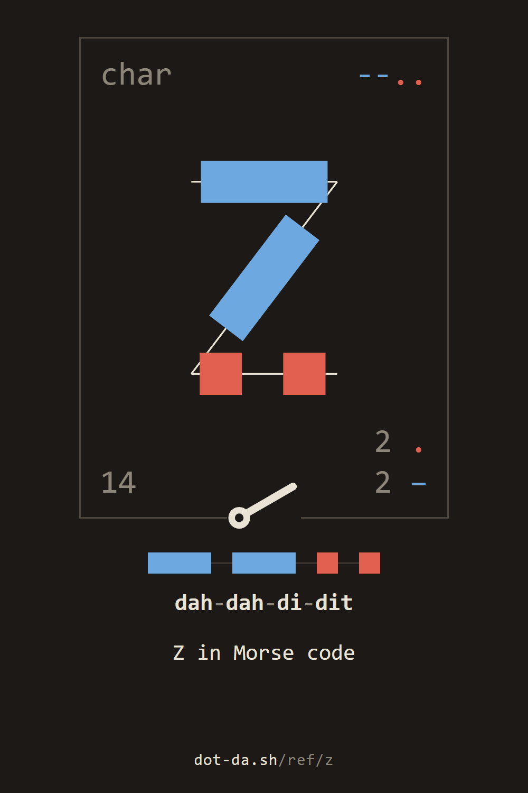
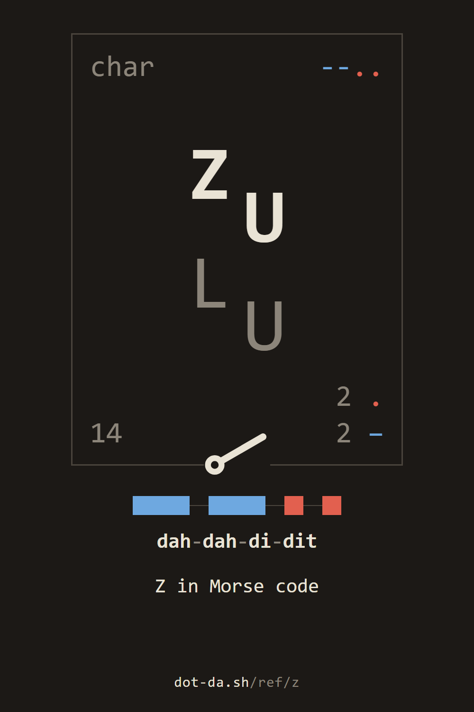
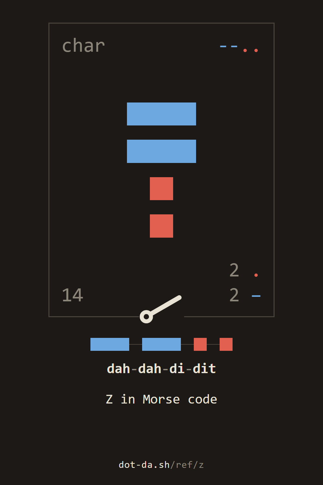
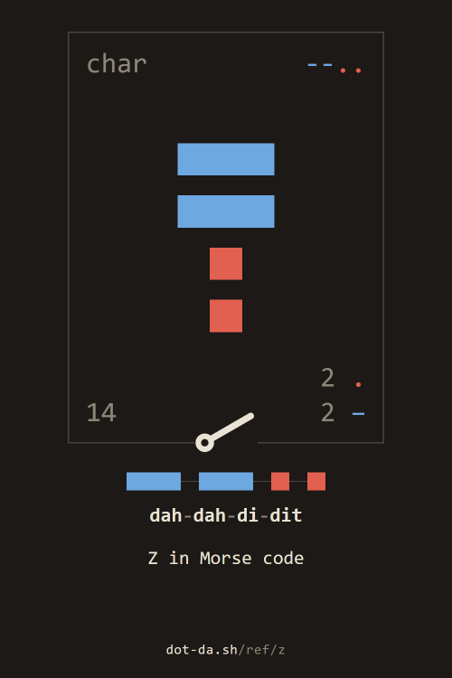

the reference / Z
Z in Morse code
the letter Z
char--..Z142 .
2 −
the 26th most common letter in English
ZULU
Z
~
key it in the station · its card in the reference · hear it (.wav)
to keep










For programs: the parts as JSON, the sound, the keyed card.